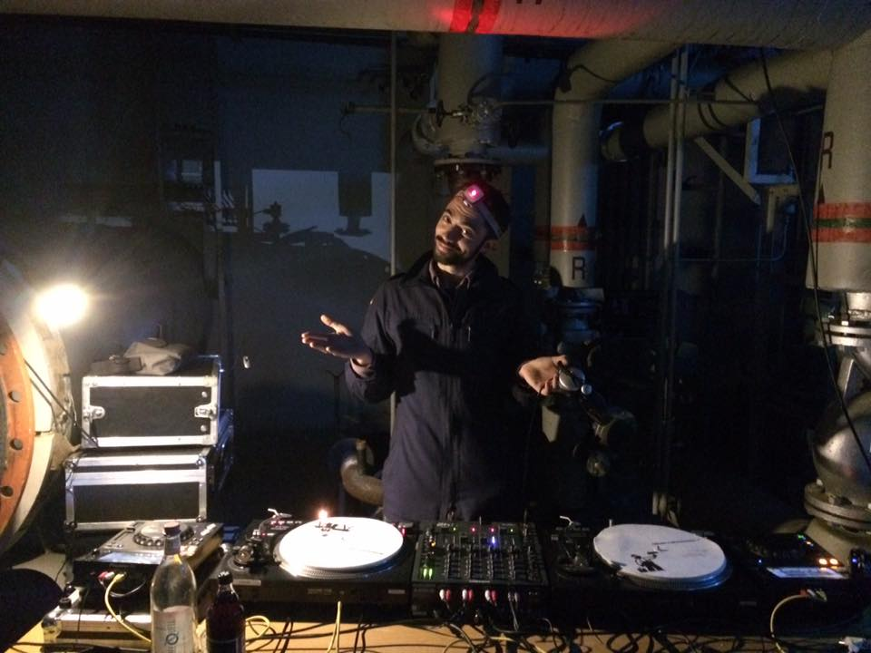
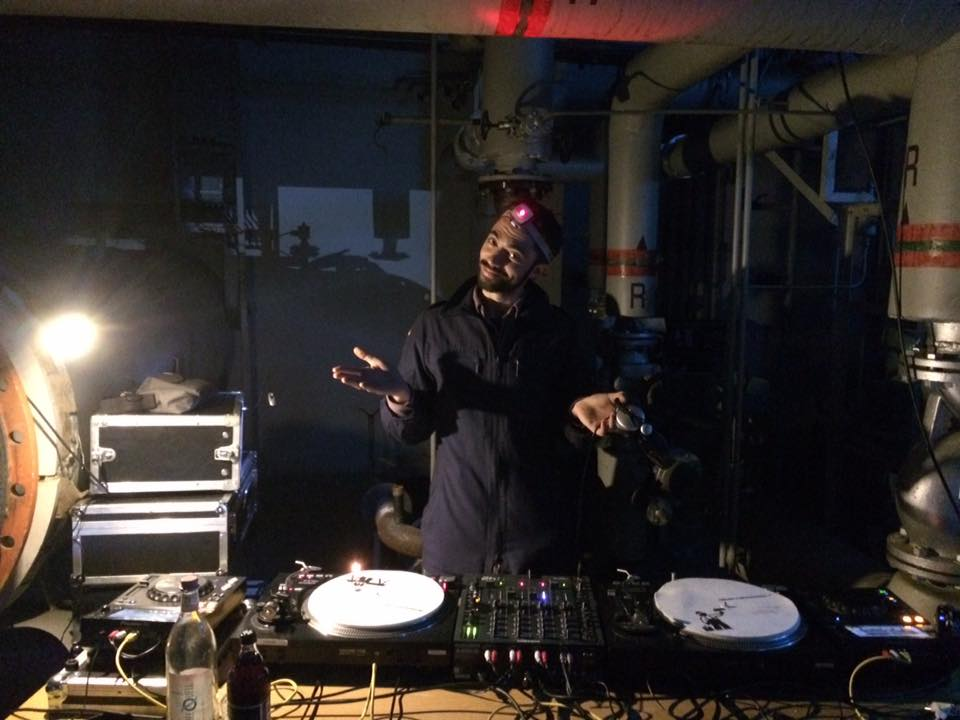

MakeSenselection
Musical Landscaping
Refined musical atmospheres for weddings,
banquets, private parties and intimate events.

 



Eclectic, sensitive selections off the beaten path: ambient, jazz, hard-lounge, soft rock, pop, soul & neo-soul, real hip-hop, disco, funk, New York house, Detroit techno, Afro-Brazilian rhythms, groove rarities, gems and timeless hits of all kinds.
Each set is a story, a sonic journey that respects the moment, its temporality, its own energy. No Top 50 of contemporary commercial ugliness, but cult tracks, known, recognized, forgotten or unknown, selected for their quality and power.
A music lover from a young age, at 18 I played my first records on Radio Campus in Orléans, before cutting my teeth on the dancefloor at an Annecy institution during my studies. With 15 years abroad, including 10 in Berlin, my multicultural fiber now expresses itself through an demanding and authentic musical selection.
Raised on French Touch (Daft Punk, Cassius, etc...), then drawn to the Berlin underground, I've mixed on radio, clubs, festivals, bars and atypical venues. Each place calls for its own musical vibration, between dance and contemplation, between warmth and elegance. My approach is equally suited to weddings, private parties or cultural events.
I mix exclusively on vinyl records and CDJ turntables, with a search for organic sound textures, forgotten rarities, unknown grooves, without forgetting great known and unifying hits. Here, no predefined playlists or commercial standards, but a musical selection that is original, curious and adventurous.
Based in Occitanie, I travel for events in Toulouse, Bordeaux, Montpellier, and of course near the Lot and throughout the region. Whether for an elegant wedding, an alternative party, a festive banquet or a contemplative opening, my goal is to offer a unique, sincere and living sound moment.
MakeSenselection is the alliance of vinyl, musical intuition and listening to the moment. An atypical DJ in Occitanie for those who are looking for more than just background sound.
- Musical performance with or without sound system / lights.
- Vinyl Bar option for cocktails and meals.
- Vinyl & digital setup, without separation by a computer screen.
- Evening DJ performance with own equipment, until 4am.
- Contact us for a personalized quote.
- Based in Lot (46), travel obviously possible :)
FOR WEDDINGS